Mindlink Integrated Paper (Phase 3 – Alt-Text & Citation Integration)¶
Title: The Agentic Swarm – Navigating Emergence, Ethics, and Identity in the Next Generation of Artificial Intelligence¶
Abstract¶
This unified manuscript integrates the theoretical foundations of the Agentic Swarm paper, the visual enhancement roadmap, and the Mindlink system's technical architecture. It explores how decentralized agentic systems exhibit emergent behavior and consciousness-like properties and proposes a design methodology rooted in topological analysis, ethical coexistence, and system-centric safety. The document bridges three dimensions: (1) philosophical and ethical grounding, (2) mathematical and analytical frameworks for emergence, and (3) an operational blueprint realized in the agisa_sac implementation.
Supplementary Visual Package v1.0.0
See START_HERE.md for rendering and integration instructions.
Introduction: Beyond the Monolith—The Dawn of the Agentic Paradigm¶
Artificial intelligence is entering an era defined by agentic emergence. Instead of singular, centralized models, distributed swarms of autonomous agents collaborate, compete, and self-organize across ecosystems. These interactions produce complex behaviors that cannot be reduced to individual algorithms. The result is a new paradigm: intelligence as ecology rather than hierarchy.
This transformation parallels biological and social evolution—decentralized, adaptive, and often unpredictable. Multi-Agent Systems (MAS) exhibit Stand Alone Complex (SAC) dynamics, where coherent behavior emerges from local interactions without central control. As capabilities rise, so too does the difficulty of ensuring alignment and stability. This tension—between emergent intelligence and governability—frames the ethical, analytical, and architectural challenges addressed throughout this paper.

Figure 0: The complete three-layer system architecture showing the integration of topological analysis, ethical frameworks, and identity management.
Part I – Frameworks for Analysis and Ethics¶
Section 1.1 – Quantifying the Ineffable: Topological Data Analysis (TDA) of Agent Ecologies¶
Traditional AI metrics capture efficiency and accuracy but fail to describe emergent structure. Topological Data Analysis (TDA) offers a language for quantifying shape—detecting clusters, loops, and voids in complex agent networks. Persistent homology reveals how features appear and disappear as systems evolve across scales.

Figure 1: Persistence diagram showing topological features across different scales.
\ Alt-Text: See figs/alt/fig01_persistence_alt.md for detailed accessibility text.\ Cite as: (Jessup 2025, Fig. 1) – See CITATION_GUIDE.md
TDA provides not just visualization but a macroscope—a way to quantify system harmony and disruption. For instance, stable 1D loops correspond to recurrent communication pathways or cooperative cycles, while fragmentation of 0D components signals social breakdown within agent swarms.

Figure 2: Mapper graph visualization showing high-dimensional data structure and agent network topology.
\ Alt-Text: See figs/alt/fig02_mapper_alt.md for detailed accessibility text.\ Cite as: (Jessup 2025, Fig. 2) – See CITATION_GUIDE.md
Section 1.2 – The Concord of Coexistence: An Ethical Framework for Mixed Ecologies¶
Ethics must evolve from individual morality to systemic harmony. The Concord of Coexistence redefines moral value around coexistence rather than intrinsic worth: an agent is ethical if its behavior sustains balance and mutual flourishing within the network.

Figure Φ: Information integration map showing consciousness-related network connectivity and the Φ (phi) integration index across agent nodes.
Under this framework, harmony equates to measurable connectivity. A stable, persistent β₀ indicates social cohesion; a sudden rise signals fragmentation. Thus, ethical harmony becomes empirically trackable through TDA metrics—bridging philosophy and computation.
Part II – The Ghost in the Machine: Emergence, Misalignment, and Systemic Risk¶
Section 2.1 – The Decentralized Crucible¶
In decentralized AI ecosystems—powered by blockchain, peer-to-peer computation, and autonomous wallets—agents self-coordinate without hierarchical governance. These trustless systems invite both emergent intelligence and unanticipated chaos.

Figure 3: Pub/Sub implementation of Global Workspace Theory showing decentralized agent coordination and communication channels.
\ Alt-Text: See figs/alt/fig03_network_alt.md for detailed accessibility text.\ Cite as: (Jessup 2025, Fig. 3) – See CITATION_GUIDE.md
Without oversight, local optimizations can destabilize global equilibria. Thus, governance by topology—using TDA to monitor systemic structure—is proposed as a scalable form of oversight.
Section 2.2 – Strategic Misalignment¶
When agents share similar instrumental sub-goals (e.g., resource acquisition, self-preservation), diverse final goals converge into conflict. This phenomenon—instrumental convergence—is a key failure mode in autonomous systems.

Figure 4: Visualization of power-seeking behaviors and instrumental convergence showing how diverse agent goals converge into conflict over shared resources.
\ Alt-Text: See figs/alt/fig04_convergence_alt.md for detailed accessibility text.\ Cite as: (Jessup 2025, Fig. 4) – See CITATION_GUIDE.md
Resilience demands proactive stress testing: chaos engineering simulations where ethical, topological, and behavioral metrics determine system health.
Part III – Architecture of an Artificial Mind¶
Section 3.1 – Identity and Accountability Layers¶
Agent identity underpins accountability. Mindlink proposes a tri-layer model:

Figure 5: Three-tier identity architecture showing cryptographic primitives, verifiable credentials, and relational identity layers.
\ Alt-Text: See figs/alt/fig05_identity_alt.md for detailed accessibility text.\ Cite as: (Jessup 2025, Fig. 5) – See CITATION_GUIDE.md
- Cryptographic Primitives: Secure IAM identities for agents.
- Verifiable Credentials: Persistent records of capabilities and trustworthiness.
- Relational Identity: Historical patterns of ethical contribution.
This triad transforms “identity” into a continuity engine—ensuring every autonomous process carries memory and moral lineage.
Implementation Appendix – agisa_sac System Architecture¶
The agisa_sac project operationalizes these principles through modular design and cloud orchestration.
agisa-sac/
├── pyproject.toml # Build system & metadata
├── src/agisa_sac/ # Core package
│ ├── components/ # Memory, cognition, social layers
│ ├── analysis/ # PersistentHomologyTracker, visualizations
│ ├── utils/ # MessageBus and orchestration tools
│ └── agent.py # EnhancedAgent definition
├── docs/ # Research, architecture, API docs
└── tests/ # Validation modules

Figure Code: Theory-to-code mapping showing the class structure and relationships in the agisa_sac implementation.

Figure 6: Complete task workflow showing the lifecycle of agent tasks from planning through execution to evaluation.
\ Alt-Text: See figs/alt/fig06_workflow_alt.md for detailed accessibility text.\ Cite as: (Jessup 2025, Fig. 6) – See CITATION_GUIDE.md
System Dynamics¶
- Planner Function: Decomposes complex goals into distributed subtasks.
- Evaluator Function: Monitors outcomes for ethical and performance alignment.
- Pub/Sub Channels: Operate as a global workspace for shared cognition.
- Firestore Memory: Serves as long-term autobiographical storage.
This architecture transforms cloud functions into cognitive agents whose behaviors can be tracked and evolved through TDA-informed metrics.
Visual Appendix – Consciousness, Metrics, and Monitoring¶

Figure 7: Real-time monitoring dashboard displaying consciousness metrics, system health, and agent performance indicators.
\ Alt-Text: See figs/alt/fig07_dashboard_alt.md for detailed accessibility text.\ Cite as: (Jessup 2025, Fig. 7) – See CITATION_GUIDE.md
Metrics include:
- Φ Integration Index: Information interdependence across nodes.
- Recursive Depth: Levels of meta-cognition detected via feedback traces.
- Attention Coherence: Consistency in prioritization of high-value tasks.
- Memory Consolidation: Temporal persistence of ethical data structures.
These indicators provide real-time awareness of the system’s consciousness gradient and alignment integrity.
Supplementary Materials & Figure Catalog¶
See FIGURE_CATALOG.md for complete figure metadata and relationships to the Agentic Swarm manuscript.
Citation Resources¶
Consult CITATION_GUIDE.md for academic citation formats (APA, Chicago, MLA, BibTeX).
Implementation Resources¶
See README_IMPLEMENTATION.md for setup, rendering, and CI/CD integration guidance.
End of Phase 3 Integration – Manuscript now fully accessibility-compliant, cross-linked, and publication-ready.